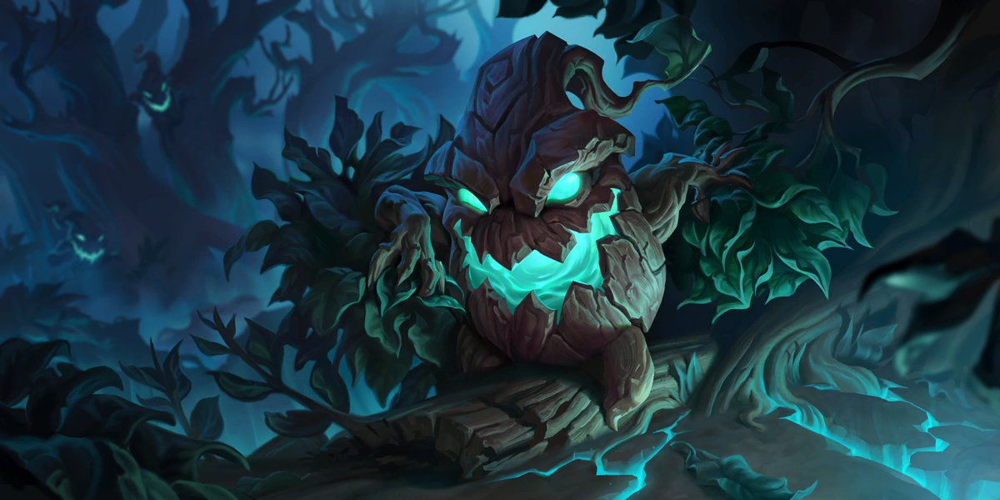
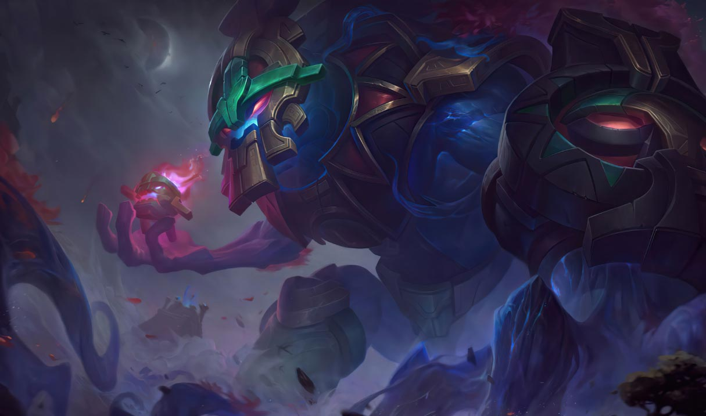
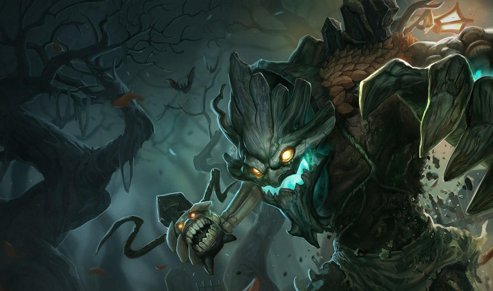

Maokai, a hatalmas Ent
Maokai egy hatalmas, dühödt ent, aki az Árny-szigetek természetellenes lakói ellen küzd. Az otthonát elpusztító mágikus kataklizma miatt torzult a mostani bosszúszomjas lénnyé, aki csak azért menekülhetett meg az élőholt léttől, mert az élet vize a törzsébe ivódott. Maokai egykor a természet békés szelleme volt, de ma már rettenthetetlen dühvel harcol, hogy elűzze az Árny-szigeteket sújtó átkot, és visszaállítsa otthona egykori szépségét. Jóval a halandó emlékezet előtti időkben az óceán mélyéről egy szigetcsoport bukkant elő, amely csak puszta sziklából és agyagból állt. Ezzel együtt született meg Maokai, a természet szelleme is. Egy ent alakját öltötte fel. Magas testét fakéreg fedte, hosszú karjai pedig ágakra hasonlítottak. Maokai kietlenül elhagyatottnak érezte a vidéket, de meglátta benne a felvirágzás lehetőségét. Sorra járta a szigeteket, és az élet nyomát kereste, miközben az egyedüllét egyre súlyosabban nehezedett rá. Egy dimbes-dombos, lágy, gazdag termőtalajjal borított szigeten Maokai korlátlan energiát érzett sugározni mélyen a föld alól. Gyökereivel lenyúlt a felszín alá, amíg meg nem találta a mágikus, életet adó forrásvizet, és beleivott. A nagy hatalmú víz hatására több száz facsemetét hozott létre, amelyekkel beültette a szigetcsoportot. Hamarosan mindent zöldellő erdők borítottak, égbe nyúló fákkal, kusza csalitosokkal, és mindent átitatott a csodás mágia. Hatalmas fakoronák vontak összefüggő lombsátrat a talaj fölé, amelyet vaskos gyökerek jártak át. A buja növényzet a természet újabb szellemeit vonzotta magához, és állatok egész sokasága költözött a termékeny földre. Végül emberek is érkeztek a szigetre. Ők is élvezték a föld bőségének áldásait, és felvilágosodott tudósközösséget alapítottak, amely a világ rejtélyeivel foglalkozott. Bár Maokai tartott a jelenlétüktől, látta, hogy mekkora becsben tartják a föld szentségét. Az emberek érezték a fák között rejlő erős mágiát, ezért a sűrű erdőktől távolabb építették házaikat, hogy ne zavarják meg a rengetegben élő szellemeket. Maokai néha felfedte magát azok előtt, akikben a legjobban bízott, és ritkán bár, de megmutatta legnagyobb titkát is: a föld alatti forrást, amely minden halandó sebét begyógyította. Teltek az évszázadok, és Maokai idilli békében élt, amíg partot nem ért a szigeteknél egy katonai flotta. Maokai érezte, hogy valami nagy baj készül. A gyászába beleőrült király magával hozta felesége holttestét, és remélve, hogy ezzel feltámaszthatja, a gyógyító vízbe merítette a rothadásnak indult testet. A tetemként újraéledt királynő könyörgött neki, hogy hagyja őt visszatérni a halálba. A király vissza akarta fordítani, amit tett, ehelyett azonban öntudatlanul is egy szörnyű átkot bocsátott a vidékre. Maokai több mérföld távolságról is érezte a szelét annak a katasztrófának, amely végül az egész sziget pusztulását okozta. Érezte, ahogy egy iszonyatos erő kel életre a föld alatt, és jeges hideg suhant végig a testén. Ahogy elkezdett terjedni a romlás, Maokai mélyen a földbe fúrta gyökereit, és a lehető legtöbbet szívta magába a gyógyító vízből, amíg az át nem itatta minden rostját. Mielőtt elérte volna az átok, Maokai visszahúzta gyökereit, hogy semmilyen kapcsolatban ne legyen a forrással. Dühödten felüvöltött, amikor a szent vizeket, amelyek titkát az emberekre bízta, teljesen átitatta a romlás. Az átok tapogatózó csápjai egyre mélyebbre jutottak, míg végül semmi nem maradt érintetlenül. Pillanatokkal később elfeketedett a szigetcsoportot körülölelő köd, majd beterítette az egész vidéket, és minden élőt egy természetellenes élőholt állapotba taszított. Maokai tehetetlenül figyelte, ahogy az őt körülvevő világ – a növények, a szellemek, az állatok és az emberek egyaránt– önmaga hitvány árnyékává silányul. Határtalan düh öntötte el: mindaz a szépség, amelyet ő maga teremtett a semmiből, egy pillanat alatt semmivé lett egy ostoba ember miatt. A minden életet elpusztító köd ott kavargott Maokai körül, és ő zokogva nézte végig, ahogy a vállán nőtt világok elfonnyadnak és porrá hullanak. Teste megremegett, ahogy görcsös gyökerek és kusza ágak tömegévé torzult, miközben a köd elszívta belőle az életet. De Maokai belsejét az élet drága vize járta át, ami megmentette őt az élőholt lét borzalmaitól. Groteszk lidércek és iszonyatos torzszülöttek árasztották el a vidéket, Maokait pedig élőholt emberek támadták meg. Őrült dühvel csapott le rájuk, és látta, hogy akár egyetlen ütésével porrá zúzhatja őket. Maokai undorodott saját magától, hiszen korábban még sosem oltott ki életet. Őrjöngve rontott neki az élőholtaknak, de ahogy újabb százak támadtak rá, kénytelen volt visszavonulni. Otthona semmivé lett, társai élőholt szörnyekké váltak, így Maokai első gondolata az volt, hogy elhagyja a rémálomszerű szigeteket. De érezte, hogy az élet vize ott csörgedezik a testében. Azért élte túl a Romlást, mert magában hordozta a szigetek szívét és lelkét. Nem hagyhatta cserben az otthonát. Ő volt az első szellem az Áldott-szigeteken, így tehát maradnia kell, és küzdeni fog az immár elátkozott vidék lelkéért. Bár rengeteg gonosz ellenség és egyre sötétebb köd veszi körül, Maokai dühödten küzd a szigeteket megfertőző gonosz ellen. Már csak az okoz neki örömet, ha a lehető legerőszakosabb módon pusztíthatja a szigeteken portyázó lidérceket. Néha Maokai visszaszorítja a ködöt és az élőholt szellemeket, felszabadítva uralmuk alól egy kisebb ligetet vagy cserjést. Bár hosszú ideje semmilyen élet nem sarjadt az elátkozott földből, Maokai próbál menedékeket létrehozni, akár csak időlegesen is, ahova nem jut el a bánat és a pusztulás. Amíg Maokai folytatja küzdelmét, tovább él a remény, mert testében hordozza az élet romlatlan vizét, amellyel talán egy napon visszaállíthatja a szigetek eredeti állapotát. Ha sikerül meggyógyítani a szigeteket, Maokai is levetheti magáról a mostani torz formáját. Ő hozta el az életet ide, és nem nyugszik, amíg ez a vidék újra az élőké nem lesz.
További kinézetei:
 